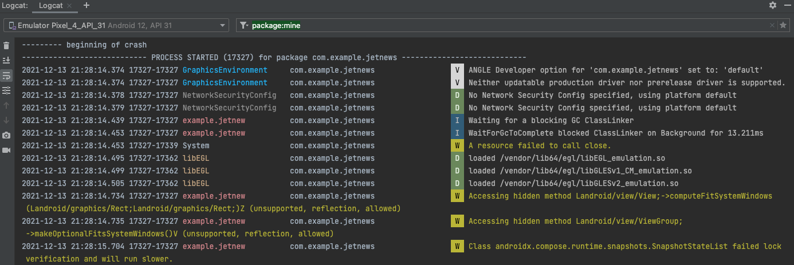

Android crash & error logs
Collect crash stacks and device logs from an Android phone or tablet so developers can find the cause of a crash, freeze or error.
Before you start
- Turn on Developer options and USB debugging on the device. See Platform tools & ADB for the steps.
-
Android Studio, or the Android platform tools (
adb) on your computer. - A USB cable, and the time the crash happened.
Logcat in Android Studio
- Connect the device and accept the Allow USB debugging prompt.
- In Android Studio, open View › Tool Windows › Logcat.
- Select the device at the top of the Logcat window.
-
Filter the logs, for example
package:mine level:error, or search forFATAL EXCEPTION. -
Reproduce the issue. Copy the crash block, from
FATAL EXCEPTIONto the end of the stack trace, into the bug report.

Capture right awayLogcat keeps only recent messages and clears them quickly.
Connect the device as soon as the crash happens, or keep Logcat open while you test.
Logcat from the command line
Clear old logs, start recording, reproduce the issue, then stop with Ctrl+C.
adb logcat -c
adb logcat > logcat.txtSave only the crash messages from the device:
adb logcat -b crash -d > crash.txtFor freezes and "app not responding" (ANR), collect a full bug report:
adb bugreport bugreport.zipWithout a computer
- Open Settings › System › Developer options.
- Tap Bug report (or Take bug report) and choose Interactive report.
- When the notification says it is ready, tap it and share the zip file.
The name and location of these settings vary by device brand (Samsung, Pixel, Xiaomi and others).
What to include in the report
- App version and build number.
- Device model and Android version.
- Date and time of the crash, and the steps to reproduce it.
- A zip file with all the logs from the session, not only the lines that show the crash.